탱커 1, 공격 2, 지원 2, 역할이 다른 다섯 영웅이 한 팀입니다
1인칭으로 싸우며 화물 호위나 거점 점령 같은 목표를 다툽니다. 제안서는 여기에 아군을 읽는 UI와, 후방을 지키는 공격 영웅을 더합니다.
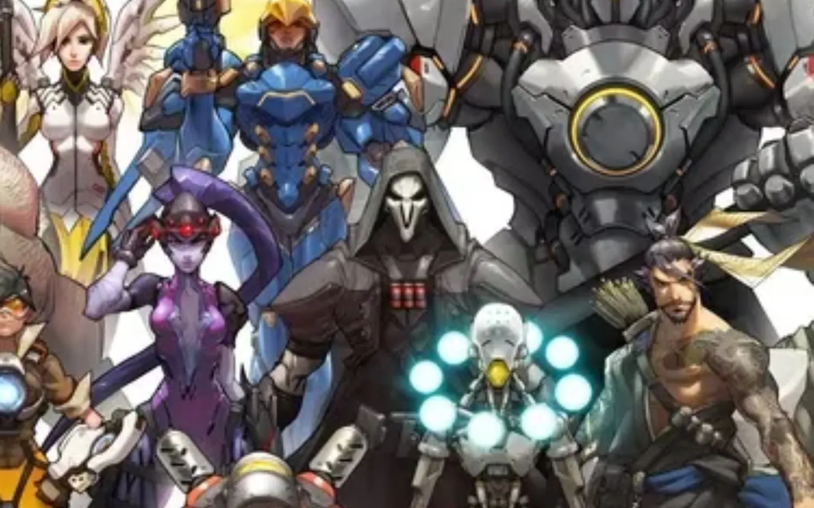
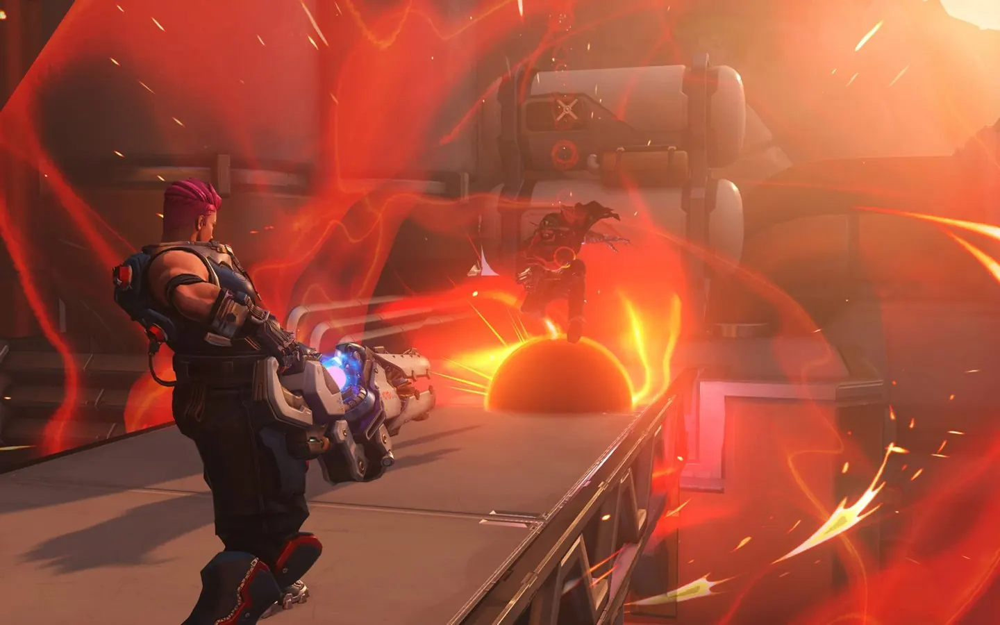
UI 발표본에 넣었던 〈오버워치〉 그림입니다. 왼쪽은 영웅 단체 그림의 일부, 오른쪽은 탱커 영웅 자리야입니다. © Blizzard Entertainment
탱커 기피의 원인을 혼자 분석하고, 제안서 두 편으로 답했습니다
2023년 게시판에 처음 쓴 문제의식을, 2026년 UI 제안서와 신규 영웅 제안서로 정리했습니다.
UI 제안서, 2026.03
- 탱커 기피를 정보 부족과 역할 과부하로 나눈 분석
- 미니맵, 파티 상태창, 탑뷰 데스캠, 13장
신규 영웅 룩 제안서, 2026.05
- 6대6에서 두 탱커가 나누던 후방 호위를 공격 역할군에
- 스킬, 수치, 콤보 설계, 19쪽
탱커가 기피되는 이유를 찾고, 그 짐을 역할군마다 나눠 지는 설계
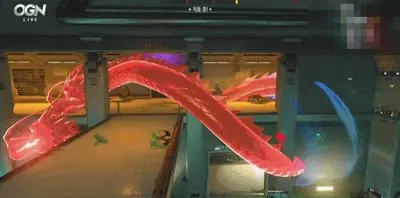

- 이유아군은 잘 안 보이고, 맡을 일은 많습니다
- 공식 기록대기 방식을 바꿔도 탱커 부족은 반복됩니다
- UI 제안앞을 보면서도 아군 상황을 읽게 합니다
- 영웅 제안공격 영웅 룩이 후방 호위를 나눠 맡습니다
- 설계 방향룩을 시작으로, 역할군마다 부담을 나눌 선택지를 더합니다
앞을 보며 싸우는 동안, 뒤의 아군은 놓치기 쉽습니다
아군의 위치와 상태를 자세히 확인하려면 교전 중인 시야를 돌려야 합니다. 필요한 정보를 읽는 비용을 탱커 기피의 한 원인으로 봤습니다.
- TAB 한 번아군, 적군 조합내 기본 역할이 정해집니다
- TAB 한 번궁극기 현황교전의 변수가 됩니다
- 시야를 돌려 확인아군의 위치힐러가 닿는 범위 안에서 내가 움직일 폭이 정해집니다
- 시야를 돌려 확인아군의 피격, 기술 상황후방 위협과 연계 시점을 판단합니다
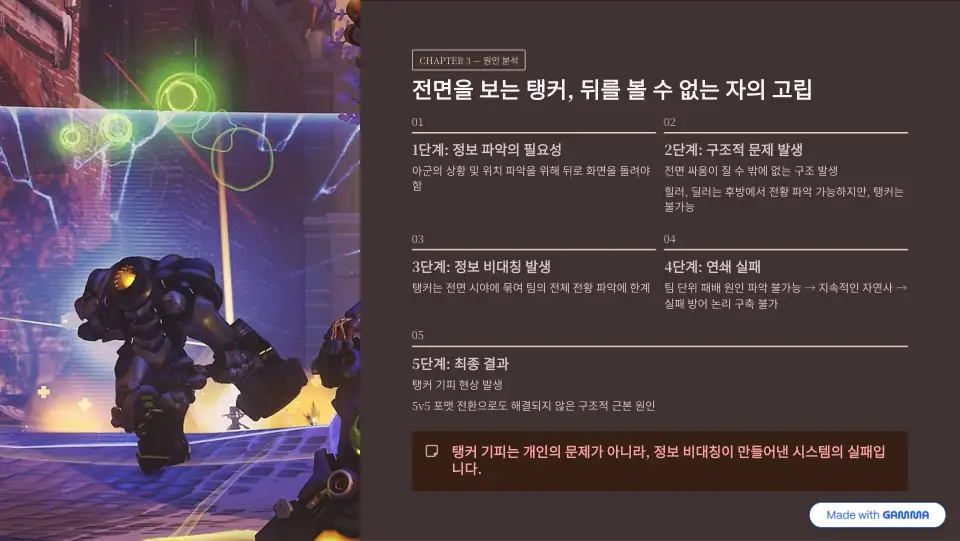
원문의 분류
논리 초안(OW-05)은 정보의 파악 방법을 넷으로 나눴습니다. ① 아군, 상대 조합(TAB으로 해결 가능) ② 아군 궁극기 현황(TAB으로 해결 가능) ③ 아군의 위치(1인칭 화면에 다 담기지 않아 화면을 계속 돌려야 하고, 교전이 급박하면 보이스로만 가능) ④ 아군의 피상황, 스킬 여부.
④에는 확인 수단을 따로 적지 않았고, 이어서 “1인칭 화면의 특성상 에임을 희생하면서 정보를 획득해야함”으로 묶었습니다. 위 그림의 ‘정해지는 것’ 줄은 원문 문단 4~7과 기획 정리 노트에서 옮겼습니다.
6대6에서 탱커 둘이 나누던 일을, 5대5에서는 혼자 집니다
정면을 유지하면서 후방 침투까지 막기는 어렵습니다. 여기에 책임 집중과 영웅 교체를 위한 숙련 부담이 겹친다고 봤습니다.
6대6, 탱커 둘
- 메인 탱커정면 싸움, 화물
- 서브 탱커전면 보조, 후방 견제
5대5, 탱커 하나
- 탱커정면 싸움, 화물, 전면 보조, 후방 견제
정면을 떠나면 전선이, 머무르면 후방이 비는 선택에 놓입니다.
- 책임 집중
- 한 명의 판단이 전선과 아군 생존에 함께 영향을 줍니다.
- 숙련 부담
- 맵과 상대 조합에 맞춰 여러 탱커를 다룰 수 있어야 합니다.
역할 과부하로 본 근거
룩 제안서 5쪽에서 6대6과 5대5의 역할 분담을 비교했습니다. 2024년 블리자드 Director’s Take도 6대6 시절에는 탱커 둘 중 한 명이 후방을 지킬 수 있었다고 적었습니다.
대기 방식을 바꿔도, 탱커 부족은 다시 등장했습니다
2019–2026년 블리자드 공식 기록입니다. 대기열, 보상, 팀 인원을 바꾼 조치와 이후의 설명을 나란히 놓았습니다.
- 역할별 대기열과 보상2-2-2 역할 큐, 부족한 역할에 보상
- 탱커 1명, 공격 3명 실험역할별 실제 인원 비율에 맞춘 1-3-2 시험
- 유연한 역할 선택에 우선권Flex로 플레이하면 이후 대기 우선권 제공
- 5대5로 대기시간 감소한 팀의 탱커 2명 → 1명
- 여전히 적은 탱커 대기 인원우선권의 효과는 몇 주 뒤 약해졌다는 회고
- 탱커를 다시 병목으로 지목Flex Queue와 Dynamic Queue 시험 예고
- 6대6 역할 큐를 다시 시험시즌 6 첫 4주, 전용 밸런스 조정과 함께
“players generally queue tank less, leading to longer wait times for all”
탱커로 대기하는 사람이 적어, 모든 역할의 대기시간이 길어진다는 설명입니다.
시기마다 부족한 역할은 달랐습니다. 2022년 11월에는 지원가 수급이 문제였고, 2024년과 2026년 7월에는 탱커 부족을 다시 언급했습니다.
제가 풀고 싶은 지점
대기열과 보상, 인원 조정에 더해 탱커를 맡기 부담스러운 이유를 줄여야 한다고 봤습니다. 제안서는 교전 중의 정보 부담과 역할 집중에 초점을 맞췄습니다.
공식 발언과 출처 7건
2019.07 역할별 대기열과 보상
각 역할의 대기 인원에 따라 예상 대기시간을 보여 주고, 필요한 역할에 보상을 주는 방식을 소개했습니다.
Introducing Role Queue 원문 ↗2020.02 탱커 1명, 공격 3명 실험
카플란은 탱커가 팀의 기대를 짊어지는 고압적인 역할이라고 설명했습니다. 1-3-2 실험의 목표는 대기시간 단축이었습니다.
Triple Damage 공식 인터뷰 원문 ↗2020.11 유연한 역할 선택에 우선권
탱커, 공격, 지원 중 어떤 역할이든 맡는 Flex 참여자에게 우선권을 주어, 역할별 대기 인원 차이를 줄이려 했습니다.
Priority Pass 공식 설명 원문 ↗2022.10 5대5로 대기시간 감소
2024년 공식 회고는 5대5 전환 뒤 대기시간이 크게 줄었다고 설명합니다. 인원 변경이 실제 개선을 만든 점도 함께 봅니다.
2024 Director’s Take의 2022년 회고 원문 ↗2024.07 여전히 적은 탱커 대기 인원
탱커로 대기하는 비율이 낮아 모든 역할이 기다리게 된다고 설명합니다. 6대6에서는 두 탱커가 전선과 후방 보호를 나눌 수 있었다는 장점도 함께 짚었습니다.
players generally queue tank less, leading to longer wait times for all
5v5와 6v6에 관한 Director’s Take 원문 ↗2026.07 탱커를 다시 병목으로 지목
탱커 두 명을 기다리는 문제를 줄이기 위해, 공격 역할의 일부가 탱커로 전환하거나 대기 인원에 따라 팀 구성을 바꾸는 시험을 예고했습니다.
Tank (which is our current bottleneck)
Director’s Take: Future Formats 원문 ↗2026.11 6대6 역할 큐를 다시 시험
두 대기 방식 실험이 역할 큐에 대한 기대를 충족하지 못했다고 돌아봤습니다. 5대5와 6대6을 함께 운영하며, 2-2-2 역할 큐 경쟁전의 4주 시험을 예고했습니다.
Director’s Take: 5v5 and 6v6, Better Together 원문 ↗
2022년 말의 다른 상황은 시즌 1 개발자 블로그에서 다뤘습니다. 공식 기록은 문제의 반복을 보여 주는 근거이며, 정보 부담과 역할 집중을 원인으로 연결한 부분은 제 분석입니다.
미니맵과 파티 상태창을 얹어, 앞을 본 채로 아군을 읽게 합니다
미니맵은 아군 위치를, 파티 상태창은 피격과 궁극기 준비를 전달합니다. 원본 전투 화면에 UI를 얹은 합성 시안입니다.
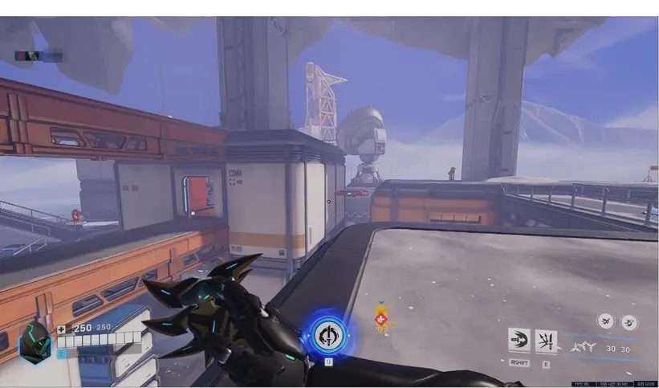
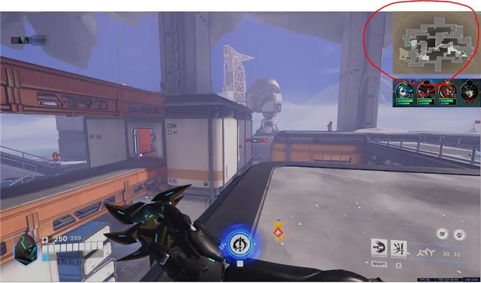
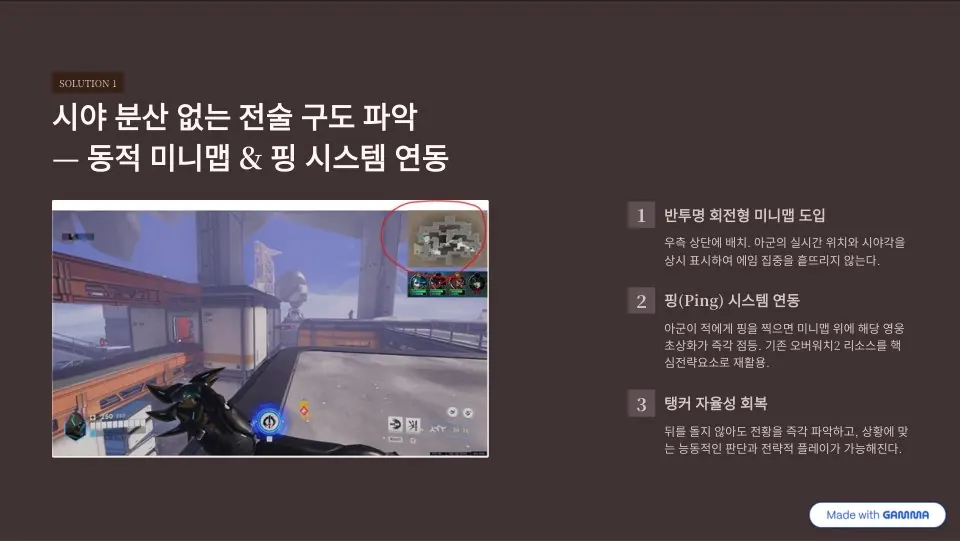
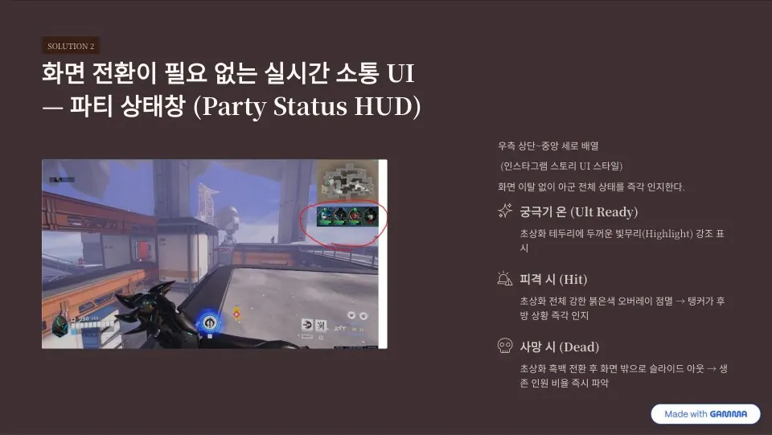
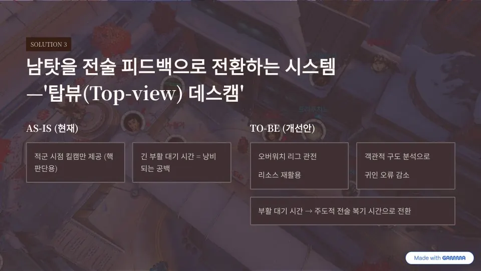
이 화면으로 바뀌는 판단과 예상 반론
아군 공격수를 따라 지원가가 측면으로 옮겨 갔다면, 탱커는 지원이 줄었다는 것을 보고 진입을 늦추거나 자리를 지킬 수 있습니다.
화면이 복잡해진다는 반론에는 외곽 배치, 반투명, 필요한 순간에만 드러나는 표시로 답했습니다. 정보 탐색도 실력이라는 반론에는, 이미 음성과 실루엣으로 주는 정보를 읽기 쉽게 정리하는 것이라고 답했습니다.
룩은 아군을 지킬수록 자기 전투도 유리해지는 공격 영웅입니다
SHIFT로 아군에게 뛰어들어 둘 다 보호하고, E 패링에 성공하면 SHIFT가 돌아와 한 번 더 뛰어듭니다.
- 아군을 봅니다도약 대상을 고르려면 도움이 필요한 아군을 읽어야 합니다.
- 기술을 받아냅니다적의 공격 시점에 맞춰 패링하고, 아군을 보호합니다.
- 한 번 더 합류합니다패링 성공으로 도약을 돌려받아 다음 보호 행동을 잇습니다.
룩 기획서 본문 12~17쪽의 SHIFT 초기화안을 기준으로 풀어 쓴 흐름입니다.
패링 성공과 실패를 시간표로 비교하기
후방 호위 핵심 루틴, 0~10초
룩 제안서의 값으로 다시 그렸습니다. 패링에 성공했을 때 SHIFT를 돌려줄지, 우클릭을 돌려줄지 두 안을 바꿔 볼 수 있습니다.
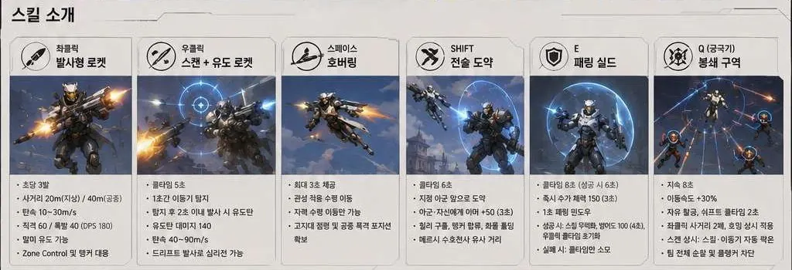
원문 값
원문 값: SHIFT 쿨 6초, 아군과 자신 아머 +50(3초), E 쿨 8초(성공 시 6초), 즉시 추가 체력 150(3초, 실패해도 발동), 패링 창 1초, 성공 시 방어도 100(4초), 우클릭 쿨 5초. 누른 시점(0, 0.5, 1.0, 1.2초)과 ‘쿨은 누른 순간부터 돈다’는 가정은 보기 위해 정했습니다.
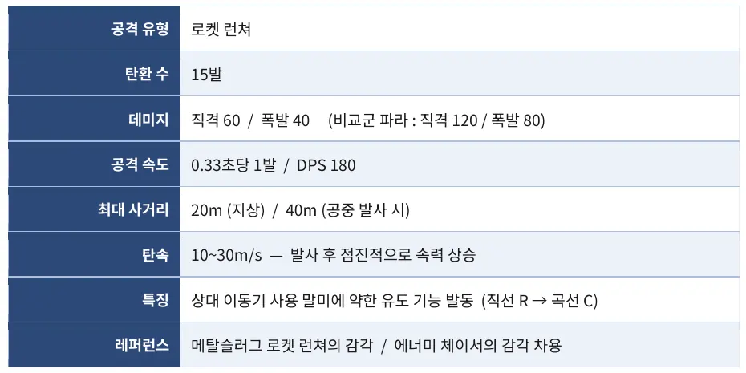
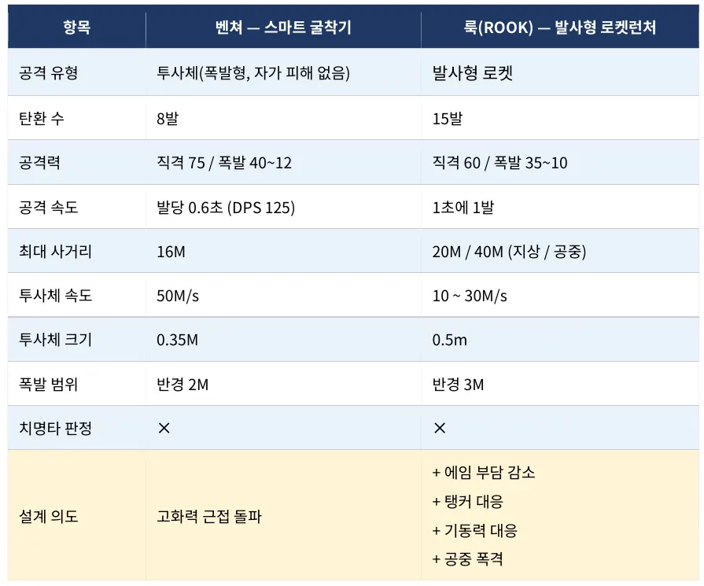
룩을 시작으로, 역할군마다 부담을 나눌 선택지를 더하려 합니다
공격 역할군의 첫 사례가 룩입니다. 탱커가 맡기 어려운 일을 고르고, 그 일을 수행하는 재미와 보상을 다른 역할군의 영웅에도 설계하려 합니다.
2023년 공개글의 질문이 2026년 제안서로 이어졌습니다
문제의식을 기능과 영웅의 규칙으로 구체화한 과정입니다. 위의 공식 서비스 연표와 제 작업 기록은 구분했습니다.
- 협력과 정보에 관한 공개글전투 중 아군을 읽기 어렵다는 문제의식
- UI 제안서 13장미니맵, 파티 상태창, 탑뷰 데스캠
- 룩 제안서 19쪽공격 역할군에 후방 호위 분담
개인 작업의 날짜별 기록
- 메모: 조합을 플랭커 수로 나눔뒤로 파고드는 적을 어떻게 막을지가 이때부터의 축입니다.
- 공개글 ①: 미니맵, 초상화, 3인칭 데스캠인벤 자유게시판
- 공개글 ②: 탱커 기피를 힐러 의존에서 찾음인벤 자유게시판
- 메모: 원콤력을 줄여야 하는 이유한두 명의 에임보다 팀합이 승부를 정해야 한다는 답글입니다.
- UI 제안서 제출미니맵, 파티 상태창, 탑뷰 데스캠
- 신규 영웅 룩 제안서(19쪽)후방 호위를 공격 역할군에 나눠 주는 영웅
공개글과 제안서의 같은 문장
탱커랑 딜러가 앞보면서 서로 에임 경쟁하고 자리싸움 하고 있는데 어떻게 팀까지 신경쓰면서 뒤를 돌아봐.
→ UI 제안서 6쪽 “전면을 보는 탱커, 뒤를 볼 수 없는 자의 고립”미니맵이 있으면 내가 아군 위치 파악에 내 에임을 포기하지 않아도 되거든
→ 8쪽 “아군의 실시간 위치와 시야각을 상시 표시하여 에임 집중을 흩뜨리지 않는다.”아군 초상화에서 아군이 쳐맞으면 빨간색 들어오고
→ 9쪽 “초상화 전체 강한 붉은색 오버레이 점멸”탱커가 잘 하려면 기본적으로 아군 힐러가 받쳐줘야하기 때문임.
→ 논리 초안 “아군 힐러 케어 가능권에서 나의 안전 가동범위가 정해짐.”